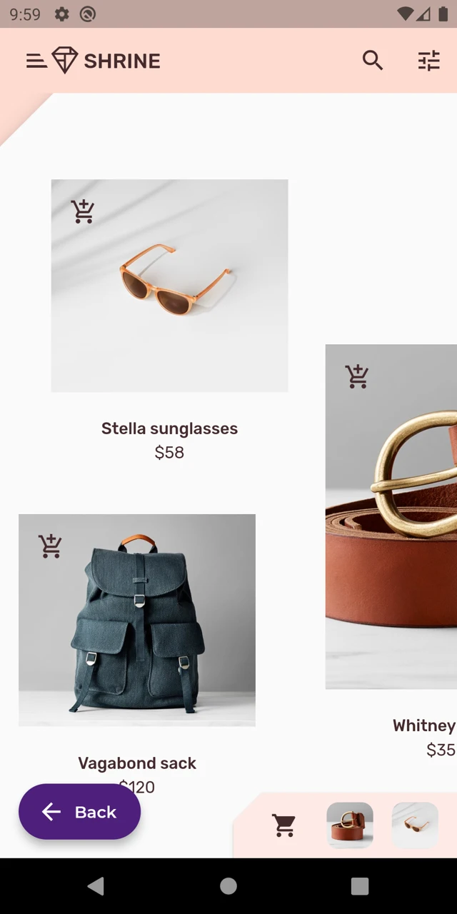
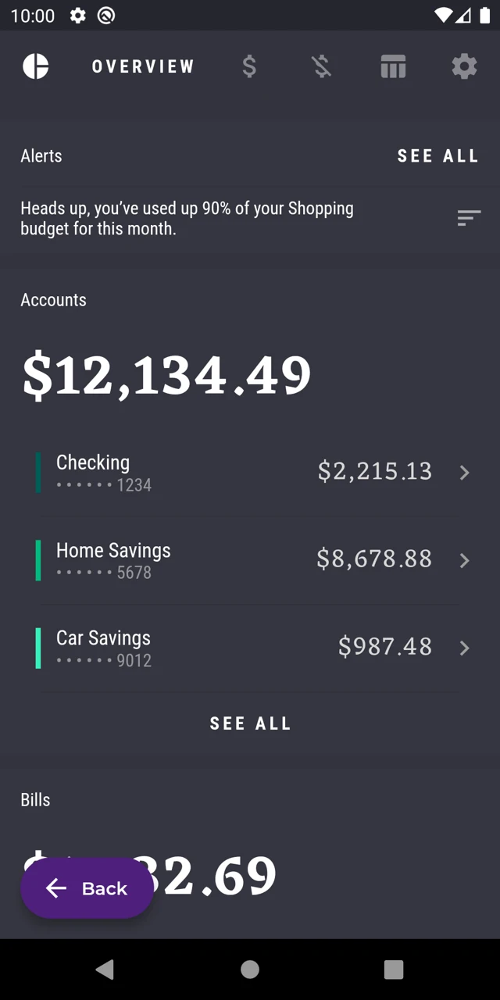
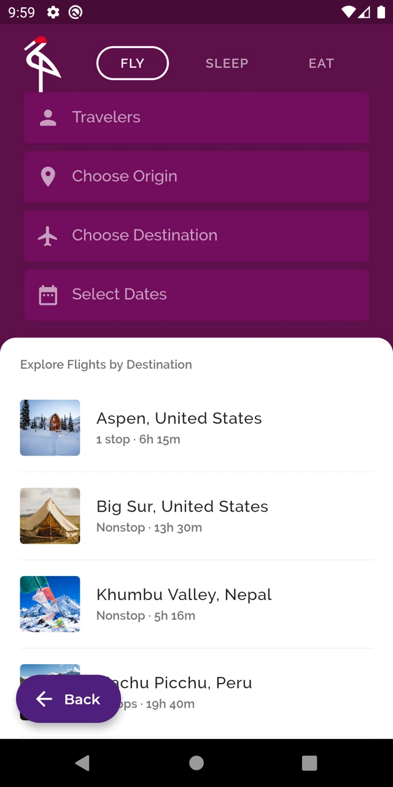
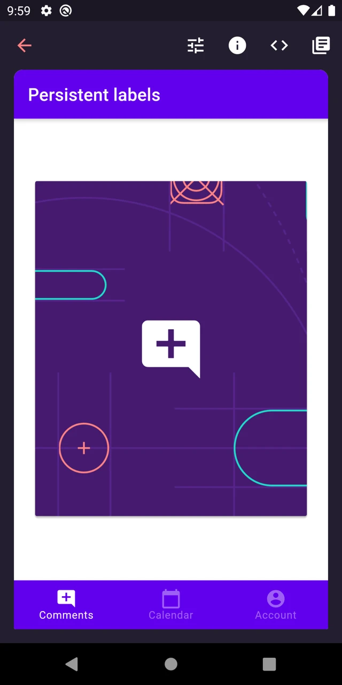

選定理由・代表作
淡いピンクの見出しの下で、サングラスとかばんの写真が異なる幅で並びます。カードの上の買い物かごの印を頼りに、商品から購入の操作へ目を移せます。
本文・作品図録公開（実作品画像4点） · 2026-11-22
Googleが公開するデザインシステム（初期M1を中心に）
Material Design
スマートフォンの画面で、ボタンを押すと、別の画面が開きます。
どこを押したか、何が変わったかが分かると、次の操作もしやすくなります。
マテリアル・デザインは、Googleが考えた、こうした画面づくりの決まりです。
色や文字だけでなく、影や、画面が切り替わるときの動きも使います。
実作品を見る

画像を表示できませんでした。下の出典ページで確認できます。
Google／Flutter チーム / Flutter Gallery 公開版（2020年代初頭の画面）
淡いピンクの見出しの下で、サングラスとかばんの写真が異なる幅で並びます。カードの上の買い物かごの印を頼りに、商品から購入の操作へ目を移せます。
Copyright (c) 2020, Flutter／公式画面を縮小しWebPに変換
出典で作品・資料を見る ↗BSD 3-Clause License（Flutter Gallery 公開版）
作品の所蔵・権利情報 ↗画像の利用条件 ↗図版全体を保ち、表示用のWebP画像を作成。
実作品を見る

画像を表示できませんでした。下の出典ページで確認できます。
Google／Flutter チーム / Flutter Gallery 公開版（2020年代初頭の画面）
暗い背景に総額を大きく、口座ごとの内訳を小さく表示しました。金額を横にたどると、各行の細い色帯が口座を区別しているのに気づきます。
Copyright (c) 2020, Flutter／公式画面を縮小しWebPに変換
出典で作品・資料を見る ↗BSD 3-Clause License（Flutter Gallery 公開版）
作品の所蔵・権利情報 ↗画像の利用条件 ↗図版全体を保ち、表示用のWebP画像を作成。
実作品を見る

画像を表示できませんでした。下の出典ページで確認できます。
Google／Flutter チーム / Flutter Gallery 公開版（2020年代初頭の画面）
上の三つのタブで空の旅・宿泊・食事を切り替えます。紫の検索欄から下の白い候補一覧へ、これから入力する部分と選べる結果が色で分かれています。
Copyright (c) 2020, Flutter／公式画面を縮小しWebPに変換
出典で作品・資料を見る ↗BSD 3-Clause License（Flutter Gallery 公開版）
作品の所蔵・権利情報 ↗画像の利用条件 ↗図版全体を保ち、表示用のWebP画像を作成。
実作品を見る

画像を表示できませんでした。下の出典ページで確認できます。
Google／Flutter チーム / Flutter Gallery 公開版（2020年代初頭の画面）
一番下の帯に、コメント・予定・アカウントを切り替える三つの入口が並びます。選択中の吹き出しと中央の大きな記号を見比べると、どこを開いているかが分かります。
Copyright (c) 2020, Flutter／公式画面を縮小しWebPに変換
出典で作品・資料を見る ↗BSD 3-Clause License（Flutter Gallery 公開版）
作品の所蔵・権利情報 ↗画像の利用条件 ↗図版全体を保ち、表示用のWebP画像を作成。
作品の知名度や画像の入手しやすさだけで選びません。紹介したい作品と、調べて分かったことをまとめました。画像を載せられるかどうかは、別に確かめています。画像の利用許諾を確認できていないものは掲載していません。
Googleが公開した設計例をもとに、背景と操作部分の重なり、文字の配置、色の役割を比べます。
画面の中の面が、どちらが手前にあるかを、影で知らせます。
重なり方や、操作したときの変化も、使う人への手がかりになります。
設計指針・空間モデル
面が手前か奥かを、影で伝えるための具体的な指針です。重なりや操作中の変化を見ると、飾りを減らすだけのフラットデザインとの違いがわかります。
基準となる高さと、入力に応じて変わる高さを区別します。保存された文書の図を、2014年の発表当日の図と断定しません。公式の図版は、まだ取得できていません。
原題：M1 — Floating action button：主要操作の部品
その画面の主な操作をするための、丸いボタンです。
丸い飾りを置くのではなく、何ができるボタンかを考えて使います。
コンポーネント・操作の優先順位
丸いアイコンボタンを、主な操作と結びつける例です。形だけでなく、その部品が画面の中で何をするかも設計しています。
M1は通常、一つの画面に一個を勧めています。ただし、同じくらい重要な操作がある場合の例外も示しています。すべての画面に必須の部品ではありません。掲載例の実際の画像と動作は未確認です。
原題：Hangouts 4.0 for Android — 2015年の更新
2015年に変わったHangoutsの例です。
新しく内容をつくる操作や、指でふれたときの反応、作業の切り替わりを見ます。
アプリ・初期Materialの適用例
公式発表が、Materialを採用したと明記する製品例です。新しいCompose（作成）操作、タッチしたときの反応、作業間の切り替えを見ます。一つの部品と、アプリ全体の関係を考えます。
4.0はHangoutsアプリの版で、Android OSの版ではありません。確認したのは、本文に書かれた設計の説明です。実際に画面を操作したり、アニメーションを見たりして評価したものではありません。
原題：Gmail — Material Design 3による統合ビュー
後の版であるMaterial Design 3を使ったGmailの例です。
同じ名前の決まりでも、初めの版から使い方や形が変わっています。
アプリ・デザインシステムの改訂
後に登場したMaterial 3を採用した例です。メール、チャット、会議などを切り替える情報のまとめ方を比べます。初期のM1の形を、そのまま固定して引き継ぐわけではないとわかります。
2014年の初版ではなく、2022年に実装された例です。現在のGmailの仕様や、提供されている状態を示すものではありません。図版の再利用の許可と、実際の画像の確認は未完了です。
UIデザインの実装見本・公式スクリーンショット
淡いピンクの見出しの下で、サングラスとかばんの写真が異なる幅で並びます。カードの上の買い物かごの印を頼りに、商品から購入の操作へ目を移せます。
作品・資料の出典を見る ↗原題：Shrine
Google／Flutter チーム / Flutter Gallery 公開版（2020年代初頭の画面） / UIデザインの実装見本・公式スクリーンショット
UIデザインの実装見本・公式スクリーンショット
暗い背景に総額を大きく、口座ごとの内訳を小さく表示しました。金額を横にたどると、各行の細い色帯が口座を区別しているのに気づきます。
作品・資料の出典を見る ↗原題：Rally
Google／Flutter チーム / Flutter Gallery 公開版（2020年代初頭の画面） / UIデザインの実装見本・公式スクリーンショット
UIデザインの実装見本・公式スクリーンショット
上の三つのタブで空の旅・宿泊・食事を切り替えます。紫の検索欄から下の白い候補一覧へ、これから入力する部分と選べる結果が色で分かれています。
作品・資料の出典を見る ↗原題：Crane
Google／Flutter チーム / Flutter Gallery 公開版（2020年代初頭の画面） / UIデザインの実装見本・公式スクリーンショット
UIデザインの実装見本・公式スクリーンショット
一番下の帯に、コメント・予定・アカウントを切り替える三つの入口が並びます。選択中の吹き出しと中央の大きな記号を見比べると、どこを開いているかが分かります。
作品・資料の出典を見る ↗原題：Bottom navigation / Persistent labels
Google／Flutter チーム / Flutter Gallery 公開版（2020年代初頭の画面） / UIデザインの実装見本・公式スクリーンショット
画面のどこを押せるのか、押すと何が変わるのか。Material Design（マテリアル・デザイン）は、それを伝えるための設計の仕組みです。色や影だけでなく、面の重なり、文字の目立たせ方、操作への反応、画面の切り替わりを結び付けます。丸いボタンを置くだけでは、その仕組みは伝わりません。
Googleは2014年6月25日のI/Oで、さまざまな端末に共通して使う最初の指針を、プレビュー（正式公開前に紹介する版）として発表しました。Android Lのプレビューに取り入れたことや、Webへの展開も紹介されています。後に更新されたM1アーカイブ（初期版の資料集）の図が、すべて発表当日の画面を示しているわけではありません。
以下は観察のための問いです。すべての作品に共通する固定ルールや、未取得画像の実見結果ではありません。
決まった一つの配色を探すのではなく、アプリの色が、情報の重要さをどう伝えるかを考えます。2014年の発表でも、アプリ独自の色の組合せを使える仕組みとして説明されています。
文字の大きさ、間隔、置き方が、読む順番をどう作るかを見ます。特定の書体を使っているだけで、Material Designだとは決められません。
面の前後関係と、操作するための部品の形を、一緒に見ます。FAB（Floating Action Button）は、画面の主な操作を担う円形のボタンです。どの画面にも必ず置く飾りではありません。
重なった面が何を覆うか、入力にどう反応するかを観察します。画面の切り替え前後で、位置の関係がどう保たれるかも見ましょう。止まった画像だけでは、動きの説明はできません。
COMPARE
Flat design（フラットデザイン）は、表現の傾向を指す呼び名です。一方、Material Designは、名前の付いた設計の仕組みです。どちらも簡潔な図形を使いますが、Material Designは奥行き・影・動きをはっきり使います。「紙」をたとえにしていても、本物の紙の手触りまで画面に描き込むという意味ではありません。
項目を横に並べる ↗READ TODAY
2022年のGmail公式発表には、Material Design 3を取り入れたことが明記されています。初期のM1と後の版を比べると、名前は続いても、決まりや製品の組み立て方が変わると分かります。ここで紹介するM1の数値や影のルールを、2022年版や現在の全製品に、そのまま当てはめないようにします。
このページを書くときに使った資料です。作品の説明、画像を入手できたかどうか、画像を使う条件は、それぞれ別に確かめています。検索結果で読んだ情報と、元のページを開いて確かめた情報も、調査の記録で分けています。
この項目の実作品画像は4点、参照・関連画像は0点です。画像の収集は続けています。